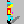

 This feature lets you superimpose an image of the ego (or any view resource in the game) onto the pic, and drag it around. It interacts with the priority screens, and can help you size elements of the picture correctly.
The view resource used for the "ego" is the one that is currently selected in the resource explorer. In the preferences dialog, you can also specify that a simple box should be used instead.
If nothing shows up when you turn on the fake ego, it may just be hidden behind a higher priority object in the picture. In that case, right clicking on the picture will center the ego under your mouse cursor.
The coordinates of the ego are shown as an aid for setting them in script. In fact, if you use the wizards in the script editor to create a View, Prop or Act object, the x and y properties will be set by default to the currently location of the fake ego.